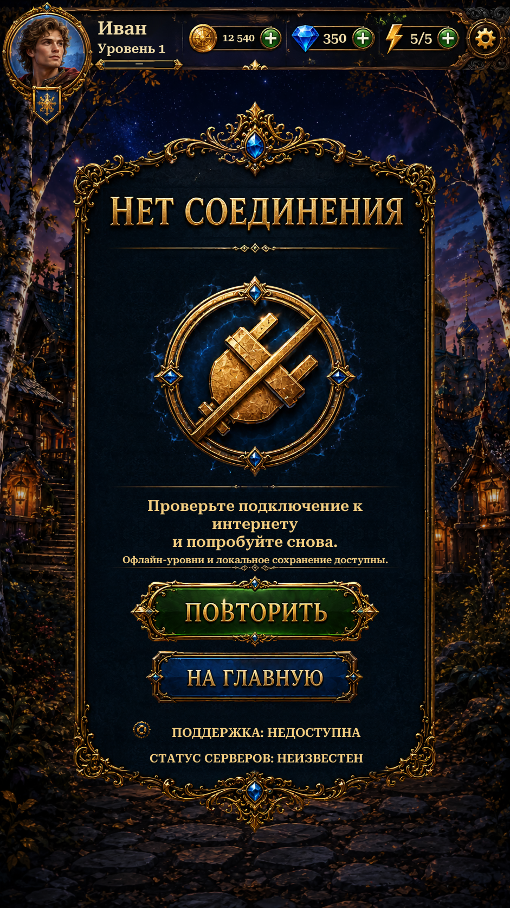

Restored the original embossed Russian title and button lettering. The panel and crossed-plug emblem retain their original extracted artwork. The page now uses the shared player header, Home scenery and visible button press feedback.
Unity views below are actual Play Mode captures with isolated saves and simulated phone dimensions, safe areas and device connectivity. The header follows the safe top edge. Retry checks device connectivity; server availability remains unconfirmed. English and network-detected headings use live text.

Changes and validation · Remaining reference differences · Verification results · Extracted assets